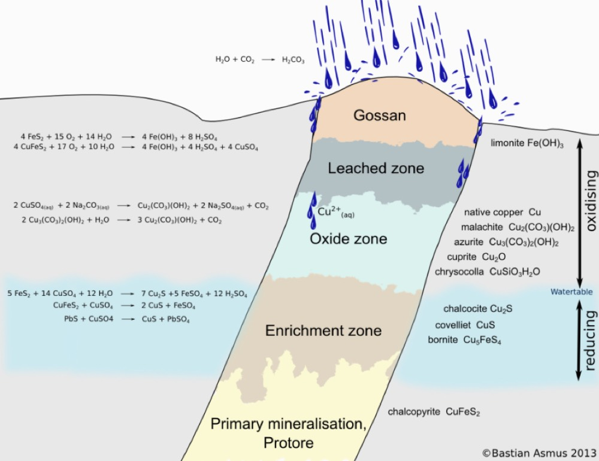
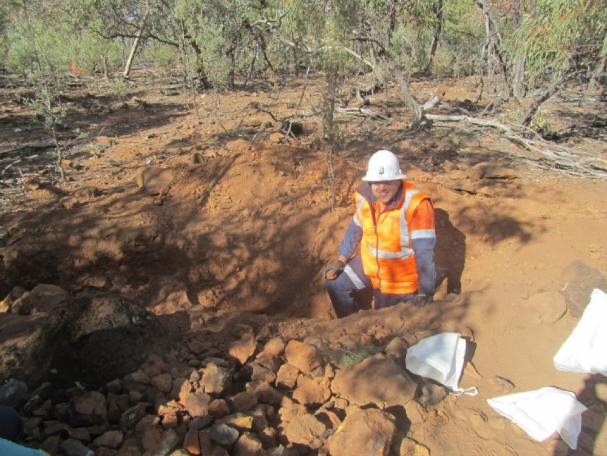
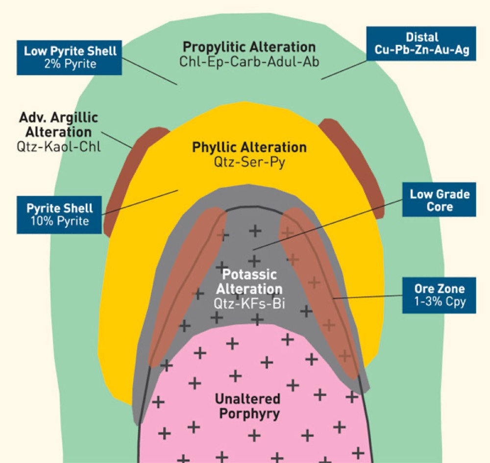
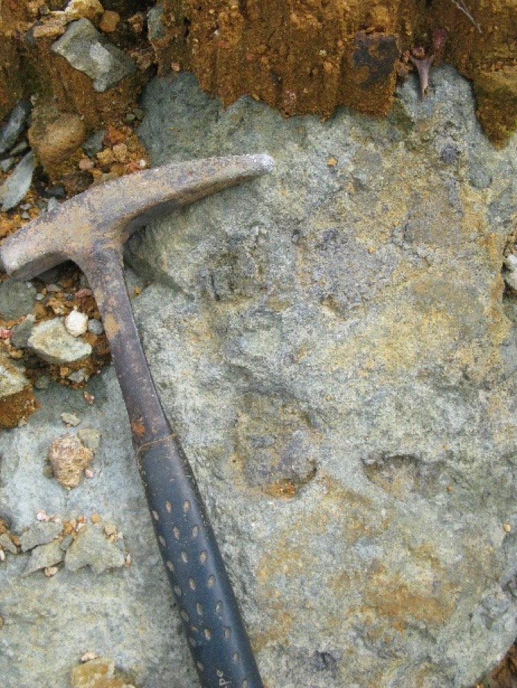
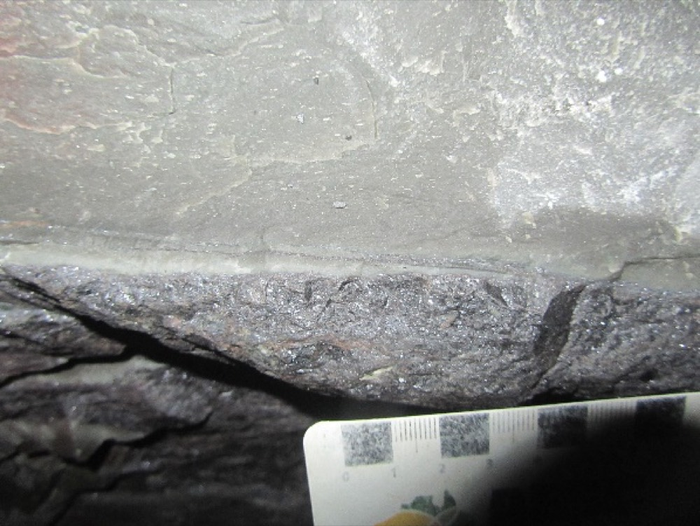
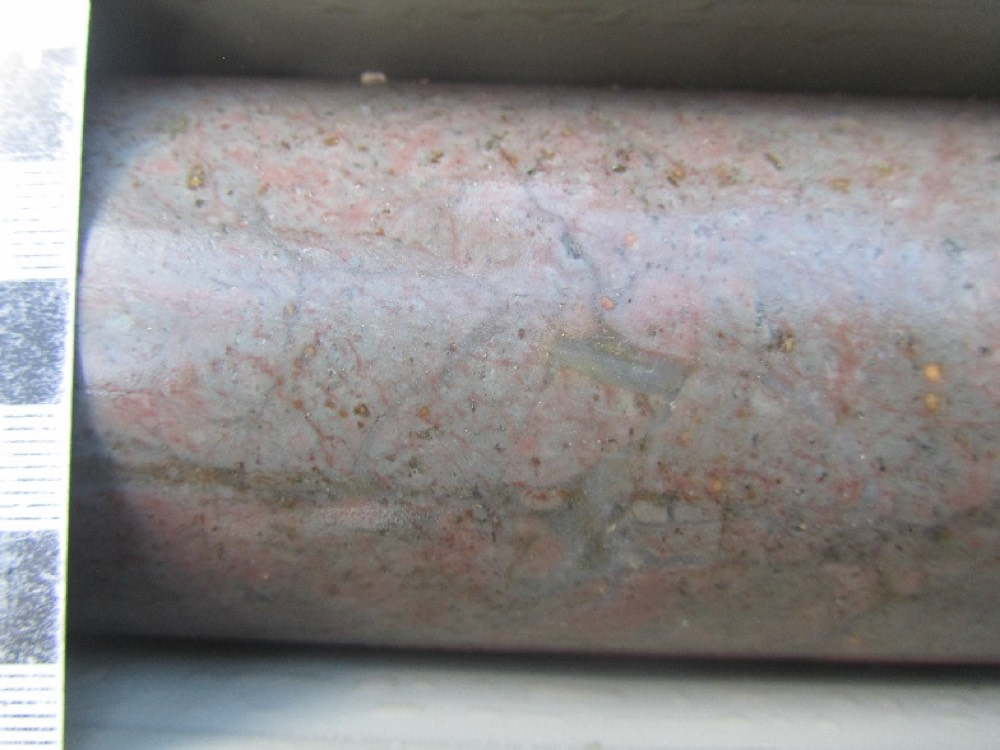
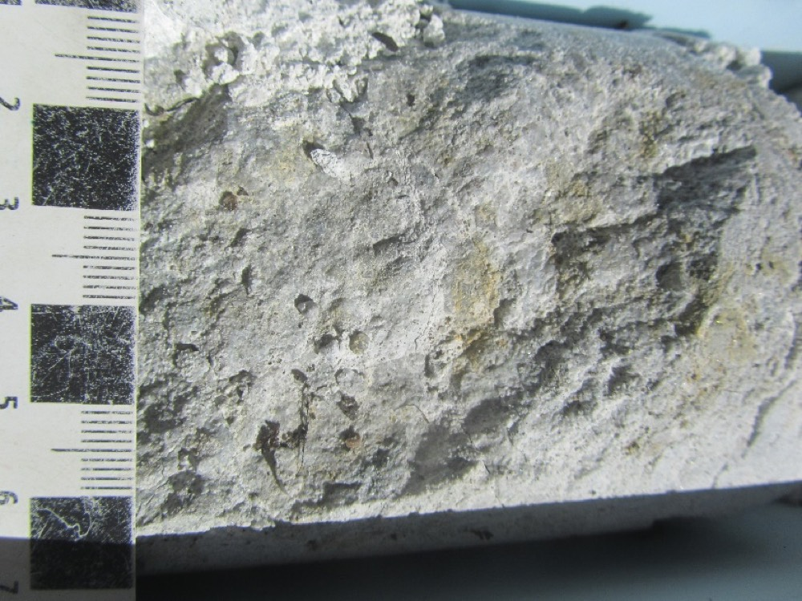
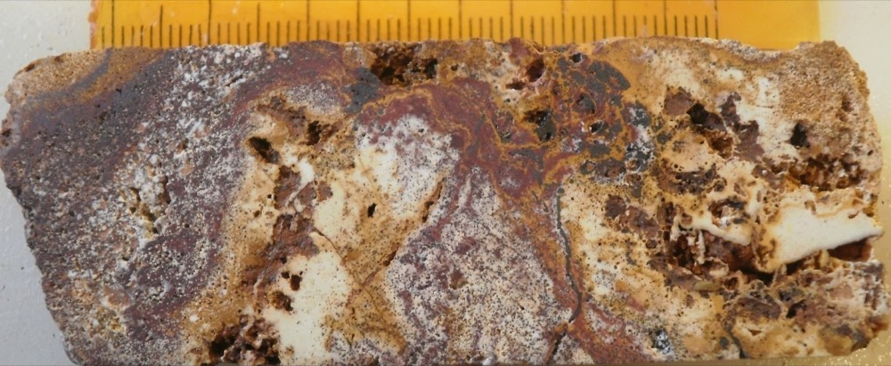

Oxidation and gossans
At the surface, oxidation mostly turns sulphides (largely pyrite and pyrrhotite) into iron oxides. Which oxide tells you about the water: goethite is evidence of a standing water level, hematite of moving water. Depending on which other sulphides were there, their grain size and how they sat together, you get differently textured oxides, and over an ore deposit those are . lab notes, oxidation
Oxidation also frees the metals, which combine with anions in oxygenated groundwater (phosphate, sulphate, carbonate, arsenate) to make secondary minerals, commonly brightly coloured: pyromorphite (lead phosphate), azurite and malachite (copper hydroxy-carbonates), cerussite (lead carbonate), smithsonite (zinc carbonate), anglesite (lead sulphate), jarosite (iron sulphate) and scorodite (iron arsenate). lab notes, oxidation


This pit is dug into an exposed gossan in the southern Cobar Basin. What colour is the material, and which iron oxide would you expect to dominate it?
Show what I see
- Red-brown to orange-brown soil and rubble, much redder than the scrubland around it.
- Sample bags lined up beside the pit.
So this is the Dominion Prospect gold gossan, and the red-brown colour points to hematite and goethite from oxidised sulphides. Reddish hematite suggests moving water. The bags are there because gossans are sampled for the metals that stay behind, gold among them. lab notes, oxidation
Lab gossan examples
What alteration is
Alteration happens when heated, usually acidic hydrothermal water gets into a rock. In igneous rocks the original rock-forming minerals turn into alteration minerals, which ones depending on the original mineralogy and the fluid, and the original igneous texture is often still there. The difference from metamorphism is where it happens: metamorphism affects the whole rock mass, while alteration is restricted to former zones of high permeability, so it’s patchy. lab notes, alteration

The five alteration types
Each type below comes with the lab notes’ example. Look at the photo first, then open the answer. Where the lab’s own alteration set has more examples, you can flick through them.
Propylitic

Name the two colours in this rock and the minerals that make them.
Show what I see
- Patchy yellow-green and duller grey to olive green over the whole surface.
So it’s propylitic alteration: yellow-green epidote and grey-green chlorite. lab notes, propylitic
Propylitic alteration gives a distinctive yellow-green (epidote) to olive-green (chlorite) colour. The rock gains calcium, iron and magnesium and loses potassium and sodium, though sometimes sodium goes up instead (albite forms). The usual assemblage is chlorite, epidote and abundant fine-grained disseminated pyrite, with carbonate very common and often the last mineral to crystallise, at lower temperature. Hematite can also be common, especially in epithermal systems; when there’s a lot of it, it’s called hematite flooding. lab notes, propylitic
Phyllic

The pale layer was once a dark siltstone. What gives it its colour and sheen?
Show what I see
- A pale, almost white band with a soft sheen, sharply above darker rock.
So it’s phyllic-altered siltstone, made of fine illite-muscovite and quartz. Phyllosilicates crystallising in the rock give it that sheen. lab notes, phyllic
Phyllic alteration gives the rock a distinctive sheen from phyllosilicates (mostly chlorite, illite and muscovite) and fine quartz. The illite-to-muscovite change happens at about 240 °C, so the mica tells you the temperature. , between illite (a clay) and muscovite (a mica), is common. When the micas are relatively coarse, it’s called . lab notes, phyllic
Potassic

What mineral makes this core pink?
Show what I see
- Pale pink to salmon core with fine grey patches.
So it’s potassic alteration: the pink comes from hydrothermal K-feldspar, commonly the low-temperature variety . lab notes, potassic
Potassic alteration gives a distinctive pink to pale orange colour from crystallising K-feldspar (commonly adularia), with biotite, muscovite and quartz. lab notes, potassic
Argillic

The core is pale and crumbly. What happened to its feldspar?
Show what I see
- Very pale grey, rough and crumbly, weak-looking core.
So it’s argillic alteration with abundant illite: the feldspar has broken down to clay, which bleaches and badly weakens the rock. lab notes, argillic
Argillic alteration makes clay minerals, usually from breaking down feldspar: kaolinite, dickite, illite and montmorillonite, with muscovite and quartz. It makes the rock very pale and substantially weaker. lab notes, argillic
Advanced argillic

Four colours: pure white, yellow-white, red and yellow-brown. Match each to a mineral.
Show what I see
- Pure white, yellow-white, red and yellow-brown patches swirled together.
So it’s advanced argillic alteration: alunite (yellow-white), hematite (red), goethite (yellow-brown) and kaolinite (pure white). lab notes, advanced argillic
Advanced argillic alteration forms close to the surface and is also called steam-heated alteration. It is very low temperature and makes opaline silica (a ), (a sulphate), pyrophyllite (similar to talc), dickite (a higher-temperature polymorph of kaolinite) and smectite (swelling clays). lab notes, advanced argillic
Name the alteration0 / 6
- Propylitic: chlorite + epidote + fine pyrite ± carbonate, yellow-green to olive green.
- Phyllic: illite-muscovite (sericite) + quartz ± pyrite, a sheen; illite turns to muscovite near 240 °C.
- Potassic: K-feldspar (adularia) + biotite, pink to pale orange.
- Argillic: clays from feldspar, pale and weak.
- Advanced argillic: alunite, kaolinite/dickite, pyrophyllite, opaline silica; near-surface, steam-heated.
Reading the chart
The chart at the top of this page puts all of these on two axes. Across: pH, from strongly acid on the left (silica and alunite) to near-neutral on the right (chlorite and calc-silicates). Down: temperature, from epithermal at the top through mesothermal to porphyry at the bottom. Each box is an assemblage that’s stable there. Corbett and Leach chart
Read it like a map. A rock with alunite and kaolinite sat in cool, very acid fluid, high in an epithermal system. Sericite and quartz means near-neutral fluid hot enough for mica. Biotite with K-feldspar and magnetite is the hot, deep porphyry core. Garnet, clinopyroxene and wollastonite is the same heat meeting limestone: a skarn. Acid alteration doesn’t stop at the surface, either: the chart carries alunite, dickite and pyrophyllite down to andalusite and corundum at porphyry temperatures, which is how a lithocap sits on top of a porphyry. Corbett and Leach chart
Two things to watch. The steam-heated advanced argillic of the lab notes is only the cool top-left corner of the yellow. And the same mineral can turn up in more than one box (quartz is everywhere), so it’s the assemblage that plots, not one mineral. Switch the chart to “Where does it plot?” to practise. Corbett and Leach chart lab notes
Kaolinite or illite?
The lab asks you to compare kaolinite and illite and work out how you’d tell them apart. Both are white to pale clays, so it’s worth knowing what to test before you’re standing at the bench. Here is what the course material gives you to work with; do the comparison on the real specimens yourself.
- Where they plot. Kaolinite is the kaolin group, more acid; illite is the illite group, nearer neutral. They grade into each other through the I-K column. Corbett and Leach chart
- What they turn into. Kaolinite goes to dickite and then pyrophyllite as it heats; illite goes to muscovite (sericite) at about 240 °C, which is why illite-rich rock often has a sheen. Corbett and Leach chart lab notes, phyllic
- Hand-specimen tests. Kaolinite is white with a dull, earthy lustre, soft (2 to 2.5) and smells earthy when wet. Mineral Sudoku sheet GEOS2181 Labs 1-2, slides 13 and 31
Look at the lustre, the feel and the smell side by side, and note which one comes with a sheen. In industry the two are usually split with a short-wave infrared spectrometer, because by eye it’s genuinely hard. (That last point is general background, not from the lab notes.)
Structures and mining
All ore deposits are structurally controlled to some degree, and many (epithermal, orogenic gold, hydrothermal and porphyry deposits especially) are strongly controlled. Structures also cause trouble: faults, shear zones, closely spaced fracture zones and zones weakened by alteration minerals (talc, chlorite, muscovite, pyrite-marcasite) can cause major engineering problems and even close a mine. Health is a structure-and-mineralogy problem too: amphiboles have to be monitored for asbestos, and fine-grained quartz for silicosis. lab notes, structures
For each structure the lab asks for its type, its spacing, whether it’s primary or secondary, and its continuity, then what it means for mining and for the mineralisation. Practise the vocabulary on core you’ve already met on the logging page. lab notes, structures
Describe the structure0 / 5
- For an altered specimen, name the type from its assemblage and colour: yellow-green epidote and chlorite (propylitic), a sheen of sericite and quartz (phyllic), pink K-feldspar (potassic), pale weak clay (argillic), alunite, kaolinite and silica (advanced argillic).
- For a gossan, say whether goethite or hematite dominates and what that implies about the water, and look for bright secondary minerals.
- For a structure, give type, spacing, primary or secondary, and continuity.
Self-test
Answer out loud or on paper before you open each one. Claim the ounces if you got it.
Glossary and flashcards
Terms this lab uses. The dotted words in the text open them in place.
Flashcards
Where this goes next
Lecture 2 is the theory behind gossans and alteration assemblages; Lecture 11 puts the zoning on a porphyry; Lecture 14 uses the acid side of the chart for high-sulphidation epithermal deposits. For more specimens, the lab test has 78 alteration photos from the lab set.